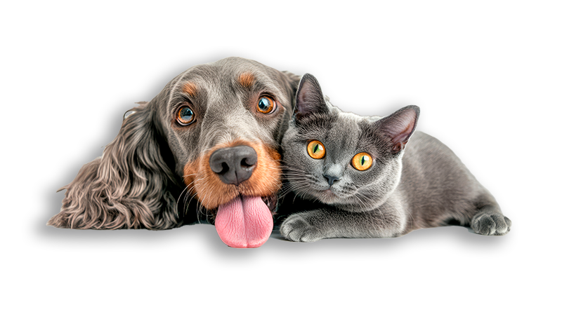
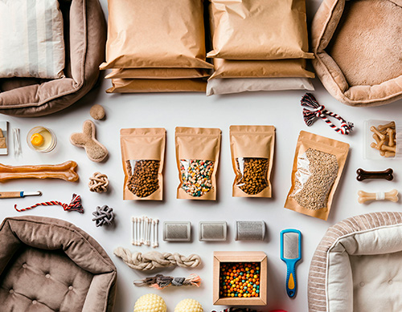
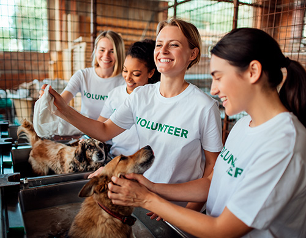
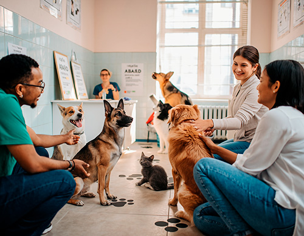
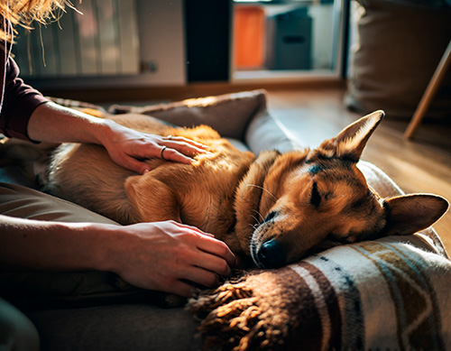

Missão
Proteger e promover o bem-estar de animais em situação de vulnerabilidade, oferecendo resgate, cuidado, tratamento e encaminhamento para adoção responsável.

O Amor de 4 Patas é uma ONG dedicada ao resgate, cuidado e proteção de animais em situação de abandono ou maus-tratos.
Atuamos no resgate, atendimento veterinário, castração e encaminhamento para adoção responsável.
Também promovemos campanhas de conscientização sobre posse responsável e contamos com voluntários e doadores para transformar a vida de cada animal resgatado.
Nosso objetivo é construir uma sociedade mais empática e solidária, oferecendo a cada animal a chance de um lar seguro e cheio de amor.
Proteger e promover o bem-estar de animais em situação de vulnerabilidade, oferecendo resgate, cuidado, tratamento e encaminhamento para adoção responsável.
Ser referência na proteção animal, contribuindo para uma sociedade mais consciente, empática e comprometida com a vida de todos os animais.
Doações financeiras

Doações de rações e materiais

Trabalho voluntário

Adoção

Lar temporário
Queremos ouvir você! Seja para tirar dúvidas, enviar sugestões ou conhecer melhor o trabalho do Amor de 4 Patas, estamos à disposição para ajudar.
Entre em contato com nossa equipe para dúvidas e informações gerais.
E-mail: contato@amorde4patas.org
Rua dos Animais Felizes, 123
Cidade — Estado